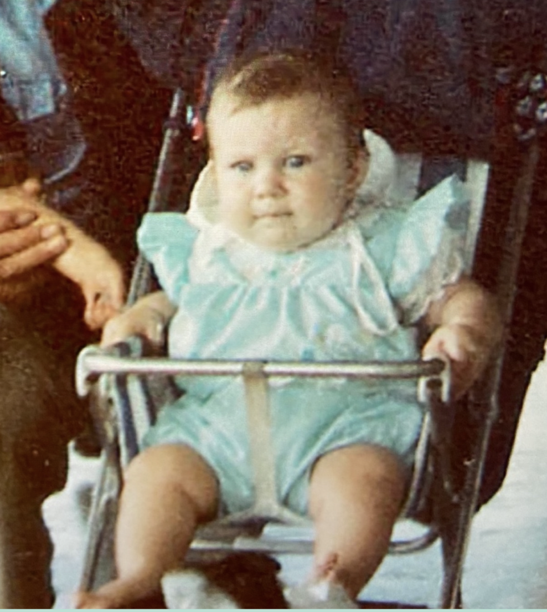
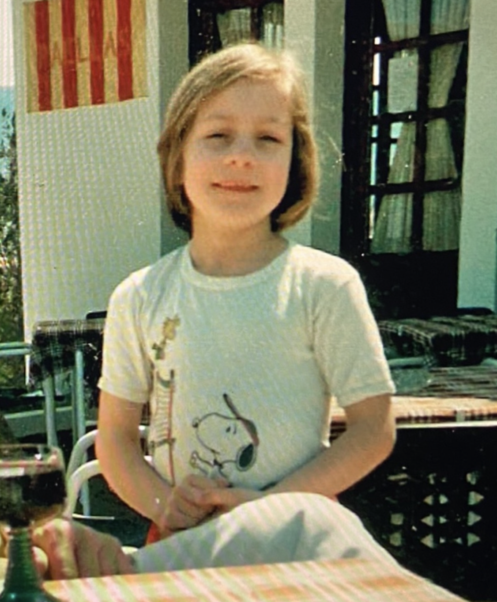

I've always wanted to make things.
Before I knew whether I was any good at it, I painted, sculpted, built and experimented. It was the making itself that mattered — the freedom to be curious and see what happened.
Creativity came first.
As a child, I made things without worrying too much about whether they were right or good enough. Growing older made me more selective about what I shared, but I've never lost that instinct to create. It still shows up in the things I make with my hands and the experiences I design on a screen.
Thoughtful design is also practical.
My dad has been another important influence. His instinct was always to think like an engineer: understand how something works, find a practical solution and make it useful. One photograph of him balancing a telephone at his ear captures that perfectly for me. It is a small, affectionate reminder that accessibility is about real people and their everyday needs.
That way of looking at the world helped shape how I approach product design: listen carefully, understand the constraints and make experiences clearer and easier to use.
Curiosity beyond the screen.
Photography taught me to notice and frame a story. Skating reminds me what it feels like to be a beginner, to try something, fall short and try again. I find the same satisfaction in growing a plant or making a cake: learning by doing, and enjoying the process rather than only the result.
Today, I bring that mix of imagination, observation and structured problem-solving to my work as a product designer.





Still making. Still learning.
I care about creating thoughtful, intuitive products that work for people — and about keeping the curiosity that made me want to create in the first place.